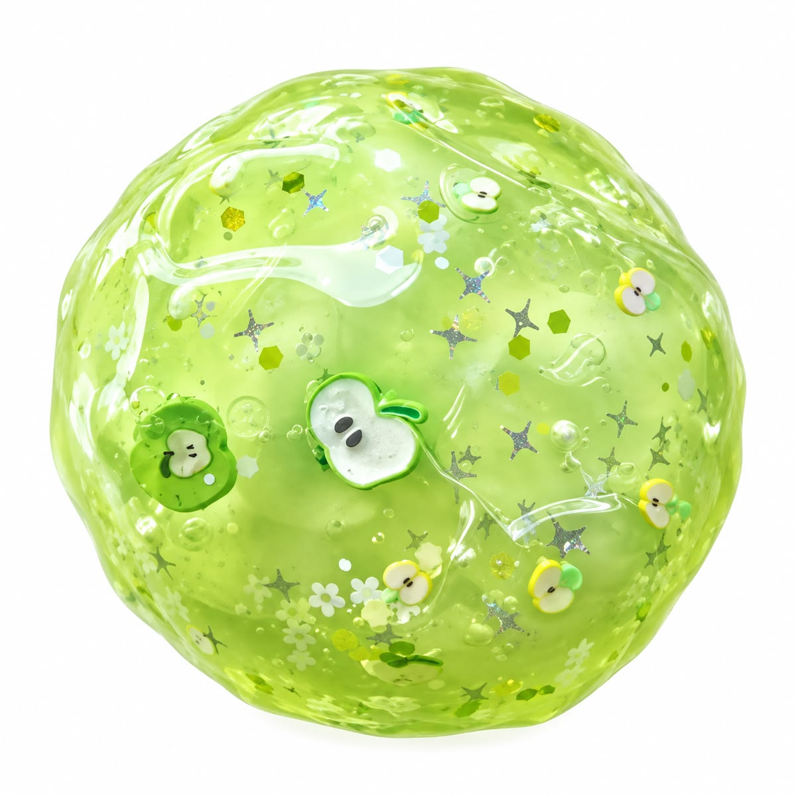
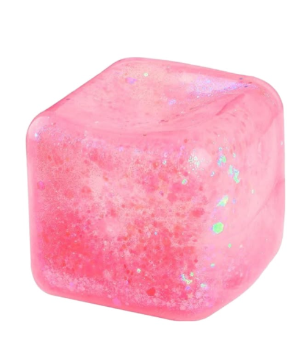
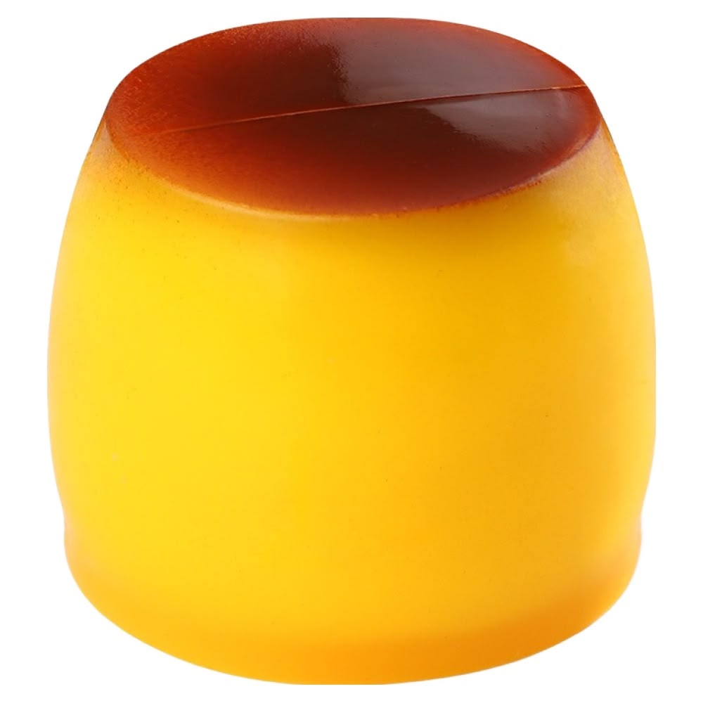

✧ 바삭바삭
〰 쭉쭉 늘리기
a
사과퐁
SLIME CLUB
소리 켜짐 ♫
잠깐, 말랑해지는 시간
오늘의 스트레스,
사과처럼 팡!
늘어나고, 금이 가고, 와자작. 다섯 번에 완성하는 왁뿌.

청사과

핑크 큐브
버터

푸딩
FRESH APPLE
100% 말랑한 순간
내가 터뜨린 사과
00
✧ 꾹 눌러보세요
01 / GREEN APPLE
작은 쉼표, 큰 행복 ↗
0 / 5
↻
새로 만들기
☝
꾹 누르기
다섯 번에 와자작
↔
드래그
이리저리 쭉쭉
♫
소리 켜기
영상 속 실제 소리
지금은 아무 생각 없이, 말랑하게.